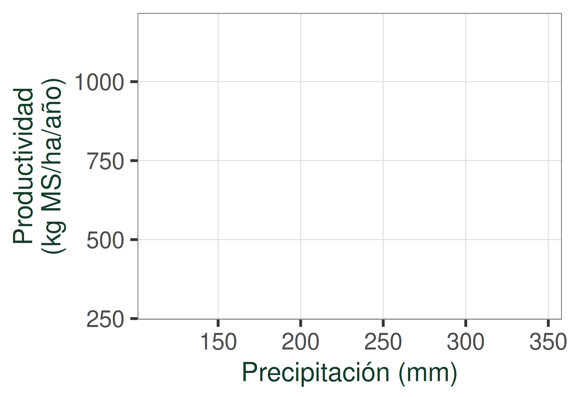
Correlación y regresión lineal simple
¿Cómo estudiamos la relación entre dos variables cuantitativas?
Andrés Tálamo
25 de septiembre de 2026
Hasta ahora…
Hasta ahora usamos la inferencia para estimar parámetros y comparar poblaciones.
¿Y si nos interesa saber si existe una relación entre dos variables cuantitativas?
Preguntas sobre relaciones
¿Se relaciona la precipitación con la productividad de la vegetación?
¿Se relaciona la materia orgánica del suelo con su capacidad de retener agua?
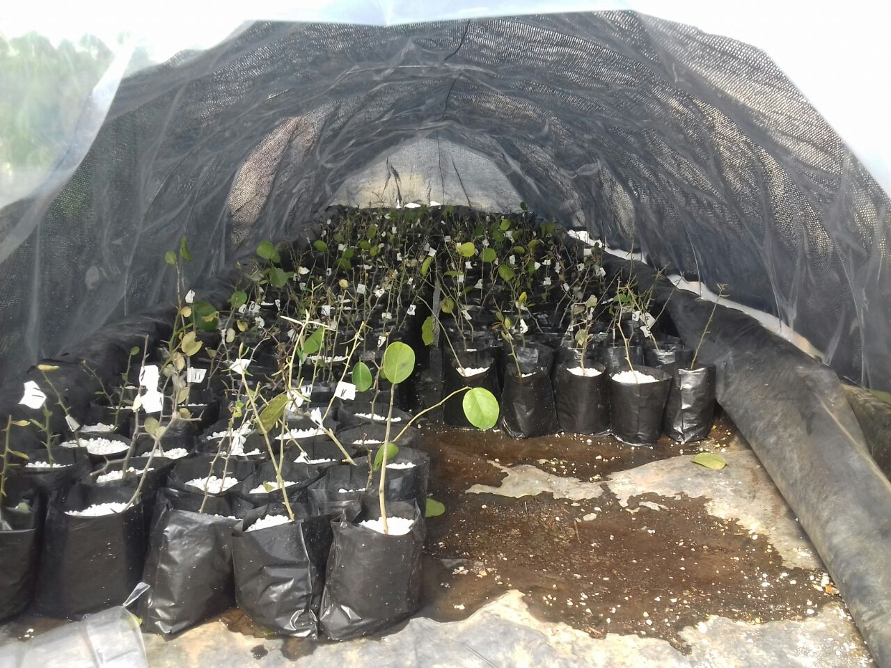
¿Cómo cambia el crecimiento de una planta en relación con su tamaño inicial?
En cada unidad observamos dos variables cuantitativas.
Cada unidad aporta un par de valores
Ejemplo didáctico: 23 parcelas de una zona y campaña definidas.
\(X_i\): precipitación acumulada; \(Y_i\): productividad anual.
| Parcela | Precipitación (mm) | Productividad (kg MS/ha/año) |
|---|---|---|
| P01 | 122,9 | 421,7 |
| P02 | 130,0 | 340,8 |
| P03 | 145,8 | 631,9 |
| P04 | 158,9 | 597,1 |
Cada fila es una unidad: el par \((x_i,y_i)\) observado procede de la misma parcela.
Datos simulados para aprender el procedimiento; no son datos de la Puna Seca. La población de referencia del ejemplo son parcelas bajo estas condiciones.
Diagrama de dispersión
| Parcela | X (mm) | Y (kg MS/ha/año) |
|---|---|---|
| P01 | 122,9 | 421,7 |
| P02 | 130,0 | 340,8 |
| P03 | 145,8 | 631,9 |
| P04 | 158,9 | 597,1 |
| Parcela | X (mm) | Y (kg MS/ha/año) |
|---|---|---|
| P01 | 122,9 | 421,7 |
| P02 | 130,0 | 340,8 |
| P03 | 145,8 | 631,9 |
| P04 | 158,9 | 597,1 |
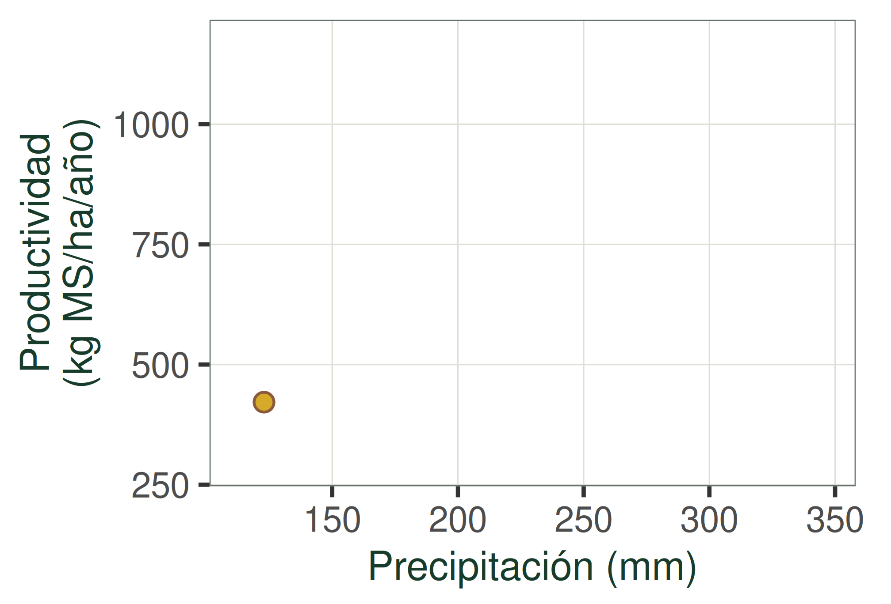
| Parcela | X (mm) | Y (kg MS/ha/año) |
|---|---|---|
| P01 | 122,9 | 421,7 |
| P02 | 130,0 | 340,8 |
| P03 | 145,8 | 631,9 |
| P04 | 158,9 | 597,1 |
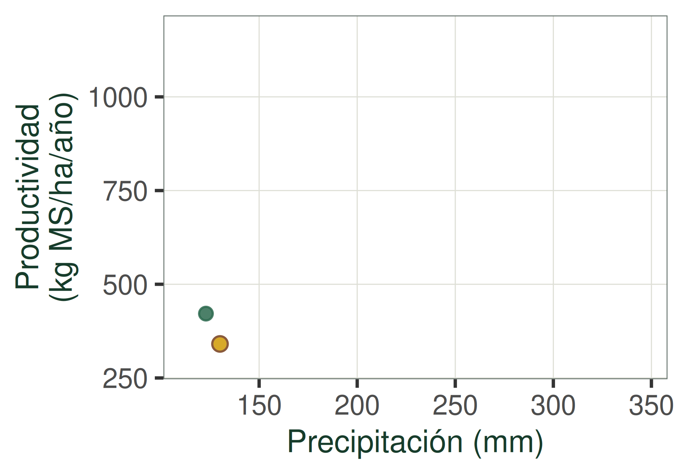
| Parcela | X (mm) | Y (kg MS/ha/año) |
|---|---|---|
| P01 | 122,9 | 421,7 |
| P02 | 130,0 | 340,8 |
| P03 | 145,8 | 631,9 |
| P04 | 158,9 | 597,1 |
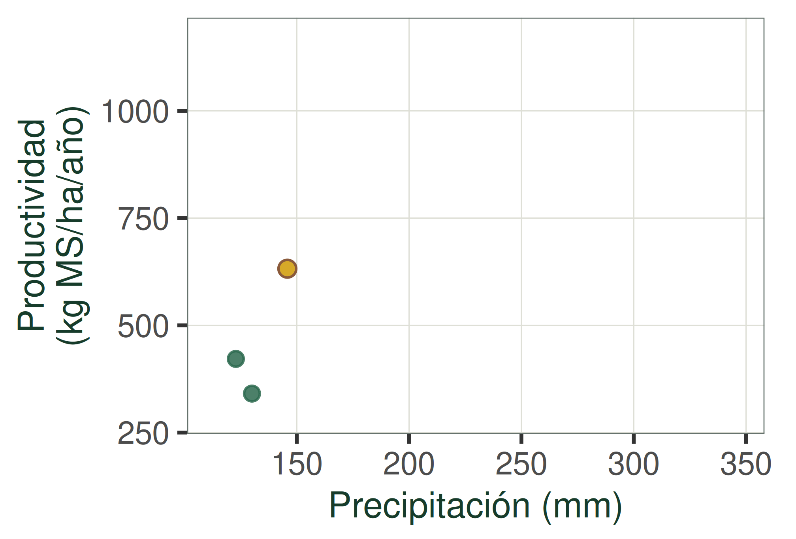
| Parcela | X (mm) | Y (kg MS/ha/año) |
|---|---|---|
| P01 | 122,9 | 421,7 |
| P02 | 130,0 | 340,8 |
| P03 | 145,8 | 631,9 |
| P04 | 158,9 | 597,1 |
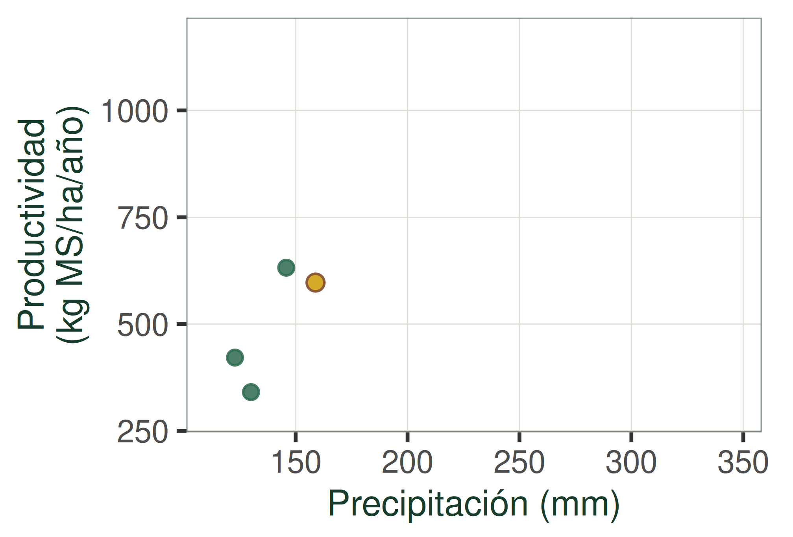
| Parcela | X (mm) | Y (kg MS/ha/año) |
|---|---|---|
| P01 | 122,9 | 421,7 |
| P02 | 130,0 | 340,8 |
| P03 | 145,8 | 631,9 |
| P04 | 158,9 | 597,1 |
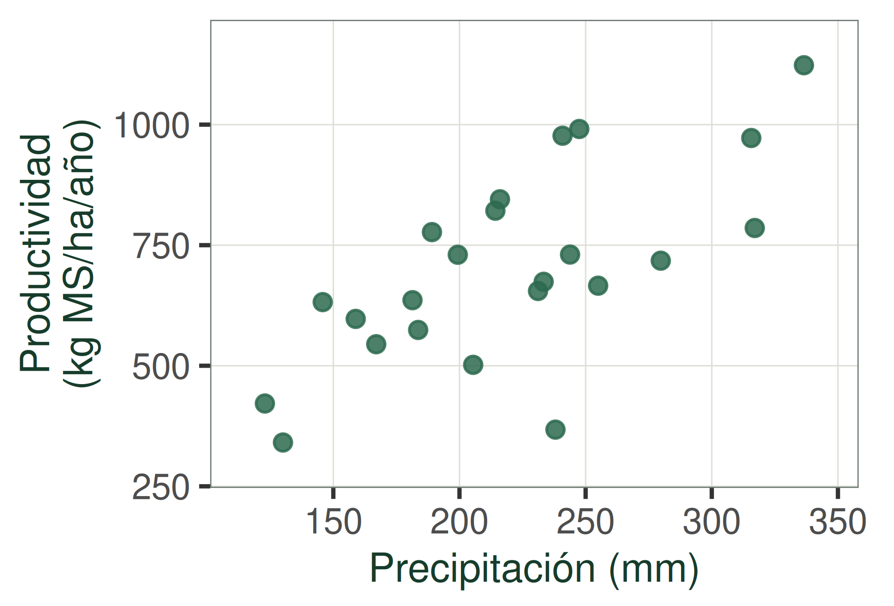
Una fila = una unidad = un par \((x_i,y_i)\) = un punto.
¿Qué buscamos en una nube de puntos?
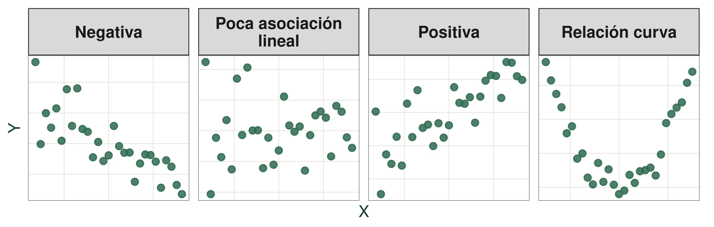
Dirección · forma · fuerza · observaciones inusuales
Primero describimos la nube. Todavía no ajustamos una recta.
La dirección observada en la muestra no se usa para decidir a posteriori la dirección de \(H_a\); una alternativa unilateral requiere una hipótesis previa.
Relación no significa necesariamente relación lineal
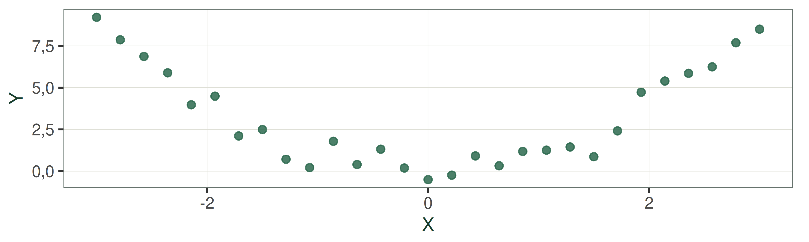
Pearson y regresión lineal simple se centran en relaciones lineales. ¿Esta relación lo es?
Sí hay relación, pero es curva. Ausencia de asociación lineal no equivale a ausencia de relación.
¿Cómo resumimos si dos variables varían juntas?
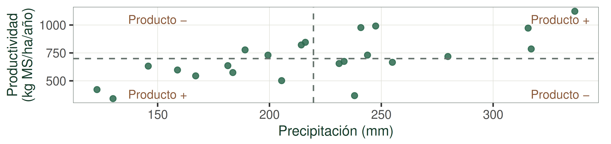
Las líneas de referencia son las medias, no una recta ajustada.
Desviaciones respecto de sus medias: \(x_i-\bar x\) e \(y_i-\bar y\). Mismo signo → producto positivo; signos opuestos → negativo.
La covarianza resume esa variación conjunta: \(S_{XY}=\dfrac{\sum_i(x_i-\bar x)(y_i-\bar y)}{n-1}\).
La fórmula formaliza la idea; no esperamos calcular covarianzas a mano.
El problema de la covarianza: las unidades
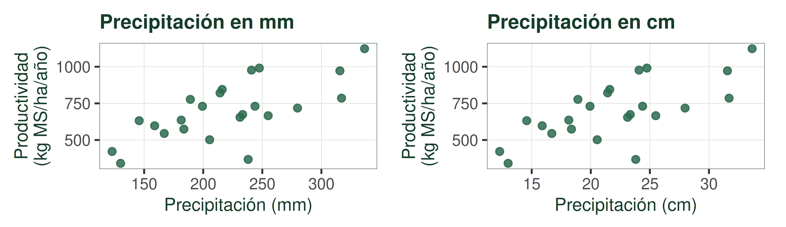
Covarianza en mm: 7988,4. En cm: 798,8.
Unidades combinadas: precipitación × productividad. Su magnitud depende de la escala: es difícil compararla entre problemas.
¿Podemos obtener una medida que no dependa de las unidades?
Pearson: una covarianza estandarizada
Estandarizamos la covarianza dividiéndola por las desviaciones estándar de ambas variables:
\[r=\frac{S_{XY}}{S_X S_Y}\]
Las unidades se cancelan. La escala queda acotada: \(-1\le r\le1\).
\(r\) es una covarianza estandarizada. En nuestras 23 parcelas: \(r=0,690\).
No vamos a calcular \(r\) a mano. Podemos obtenerlo con calculadora científica, Excel, aplicaciones, programas estadísticos o lenguajes como R.
De −1 a +1: dirección y fuerza
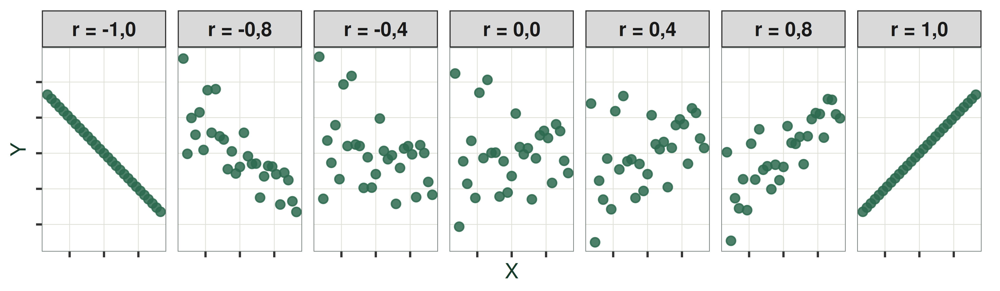
Signo → dirección. \(|r|\) → fuerza de la asociación lineal. \(-1\le r\le1\).
Cerca de \(\pm1\): mayor alineación lineal. Cerca de \(0\): asociación lineal débil o nula.
No hay cortes universales para “débil” o “fuerte”: importan la pregunta, la variabilidad y el contexto.
Cada nube contiene 29 pares. Los valores mostrados se calcularon con esos datos.
¿En cuál esperarían una correlación mayor?
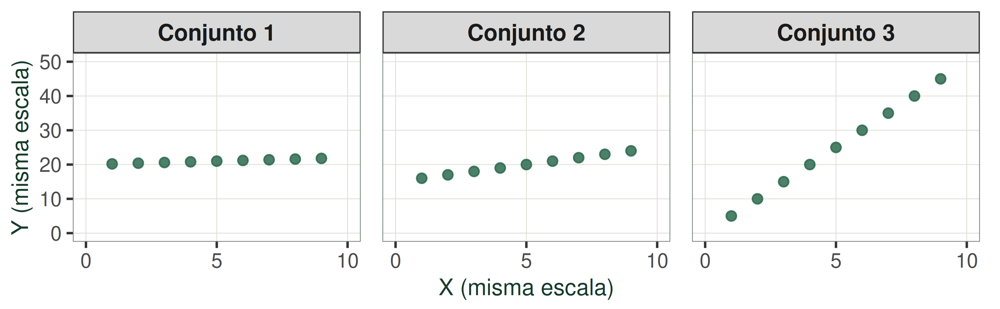
Los tres tienen \(r=1\). Miden alineación perfecta, aunque los cambios de \(Y\) sean distintos.
Mismos ejes en los tres paneles. Conservaremos exactamente estos 9 pares por conjunto para volver a ellos al estudiar la pendiente.
Propiedades importantes de la correlación
- No tiene unidades y está entre −1 y +1.
- Es simétrica: \(r_{XY}=r_{YX}\).
- Resume asociación lineal.
- Puede ser sensible a observaciones extremas.
Un número no reemplaza al diagrama de dispersión.
Un punto puede cambiar la historia
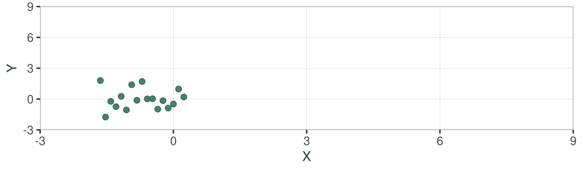
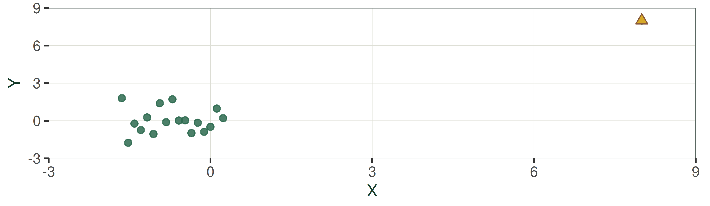
Misma nube inicial. ¿Qué cambia al agregar el punto extremo?
Sin ese punto: \(r=0,000\). Con él: \(r=0,856\). Verificamos el caso y el contexto antes de interpretar.
Correlación no implica causalidad
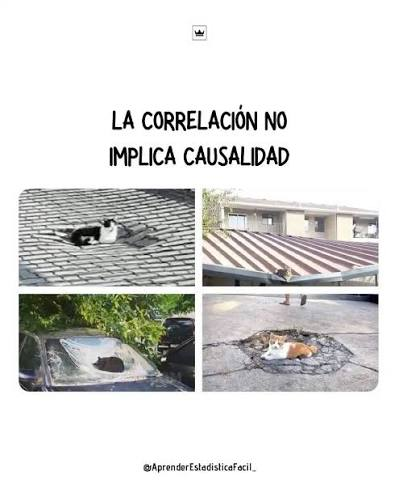
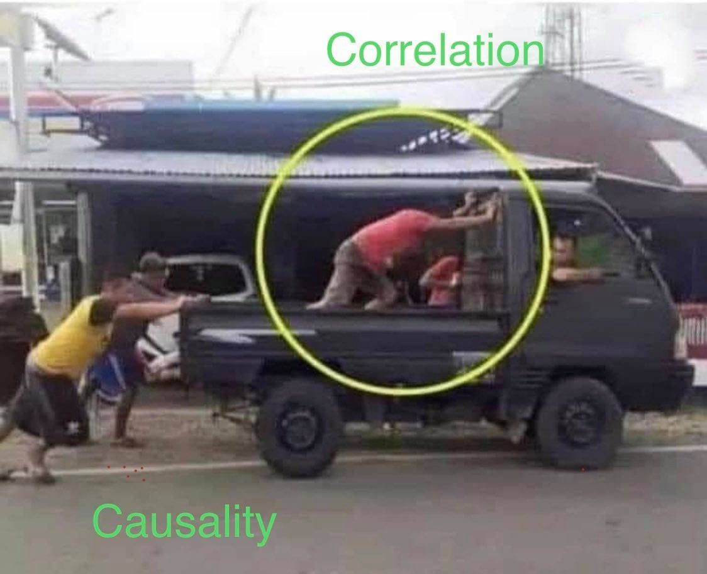
Una asociación estadística no demuestra que \(X\) cause \(Y\).
Una causa común, el diseño o la selección de observaciones pueden explicar parte de la asociación.
¿Existe una asociación?
En los estudiantes que cursan Estadística y Diseño Experimental en 2026, ¿existe una asociación lineal entre la altura y la talla de calzado?
De la pregunta al análisis
Población: estudiantes que cursan EyDE en 2026. UE: cada estudiante.
Variables: \(X\) = altura (cm); \(Y\) = talla de calzado.
Muestra: participantes efectivamente medidos. \(n\): cantidad de pares que mediremos.
Parámetro: coeficiente de correlación poblacional, \(\rho\).
Estadístico/estimador: coeficiente de correlación muestral, \(r\).
¿Tiene sentido distinguir aquí una variable respuesta y una explicativa?
No es necesario: buscamos asociación lineal; la correlación es simétrica.
Antes de cargar: contraste unilateral a derecha y \(\alpha=0{,}05\). Los participantes no constituyen necesariamente una muestra aleatoria; esto limita la generalización.
Correlación: pasos 1–2
1. Hipótesis: \(H_0:\rho=0\).
¿Y \(H_1\)? ¿Bilateral o unilateral?
Antes de observar los datos, ¿tenemos una razón para esperar una dirección?
Por conocimiento previo, esperamos que estudiantes más altos tiendan a tener tallas de calzado mayores. Fijamos antes de observar los datos: \(H_1:\rho>0\).
Una alternativa unilateral debe definirse a priori; no puede elegirse porque después observemos un \(r\) positivo.
2. Nivel de significación: \(\alpha=0{,}05\).
Correlación: pasos 3–4
3. Estadístico y distribución bajo \(H_0\) verdadera:
\[t=\frac{r-0}{\sqrt{(1-r^2)/(n-2)}},\quad\delta=n-2\]
Discrepancia entre lo observado y lo esperado bajo \(H_0\), relativa a su variabilidad.
Valores grandes y positivos de \(t\) son cada vez más atípicos bajo \(H_0\).
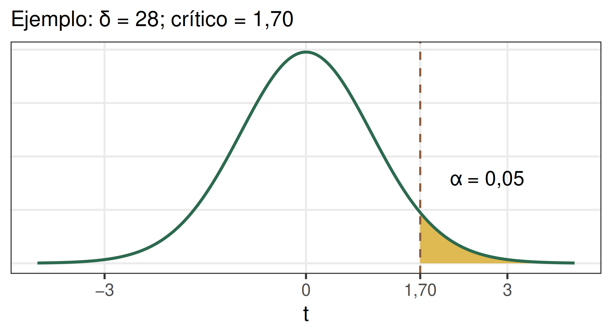
4. Criterio unilateral derecho: rechazar \(H_0\) si \(t>t_{0,95;\delta}\), equivalentemente si \(p_{\text{derecha}}<0{,}05\). En caso contrario, no rechazar \(H_0\).
La cola derecha define la región de rechazo; el valor crítico depende de \(\delta=n-2\). El denominador estandariza esta prueba; no es un error estándar general de \(r\). La distribución t exacta supone pares independientes de una población Normal bivariada.
Paso 5 — Cálculos con nuestros datos
Ingresá pares, usando la misma escala de calzado.
| Par | Altura | Talla |
|---|
Podés editar cada celda o eliminar una fila. Solo se usan pares completos y positivos. Sin nombres; guardado en esta pestaña si el navegador lo permite.
n 0
r —
t —
δ —
p unilateral (derecha) —
IC95% bilateral de ρ —
Cargá al menos tres pares para la prueba.
Correlación: pasos 6–7
6. Decisión: valor-p unilateral (cola derecha) —, con \(\alpha=0{,}05\).
Pedí la inferencia en la actividad.
7. Conclusión
Pendiente de la inferencia.
Pendiente de los datos.
Pendiente de la inferencia.
La inferencia sobre estudiantes de EyDE 2026 exige los supuestos y representatividad. El IC95% bilateral expresa incertidumbre sobre \(\rho\). En muestreos repetidos bajo sus condiciones, aproximadamente 95% de estos intervalos cubriría \(\rho\).
Evidencia y magnitud responden preguntas distintas
Magnitud observada
\(r\): dirección y fuerza de la asociación lineal.
Evidencia frente a \(H_0\) Valor-p: cuán inusual sería una asociación al menos tan extrema bajo la nula.
Un valor-p pequeño no implica una relación fuerte. Significación estadística e importancia biológica o agronómica son distintas.
Cambia la pregunta, cambia el análisis…
Hasta ahora: ¿qué dirección y fuerza tiene la asociación lineal entre \(X\) e \(Y\)?
CORRELACIÓN
Ahora: ¿cómo cambia \(Y\) en relación con \(X\)? ¿Podemos modelar o predecir \(Y\) en función de \(X\)?
REGRESIÓN LINEAL
Correlación: roles simétricos. Regresión: \(Y\) es respuesta y \(X\) explicativa/predictora. Esta asimetría responde a la pregunta y no implica causalidad.
¿Cómo cambia el rendimiento?
En parcelas cultivadas con este cereal bajo las condiciones del ensayo, ¿cómo cambia el rendimiento medio con la dosis de fertilizante aplicada? ¿Podemos estimar o predecir el rendimiento a partir de la dosis?
Reconocer la estructura del ensayo
Población: parcelas de este cereal bajo las condiciones representadas por el ensayo. UE: parcela.
\(X\): dosis de fertilizante (L/parcela). \(Y\): rendimiento (kg/parcela).
Muestra: las ocho parcelas observadas; \(n=8\).
| Variable | P1 | P2 | P3 | P4 | P5 | P6 | P7 | P8 |
|---|---|---|---|---|---|---|---|---|
| Dosis (L/parcela) | 50 | 55 | 60 | 65 | 70 | 75 | 80 | 85 |
| Rendimiento (kg/parcela) | 1130 | 1135 | 1160 | 1208 | 1211 | 1200 | 1356 | 1497 |
¿\(X\) e \(Y\) cumplen ahora el mismo papel? No: \(X\) es predictora y \(Y\) es respuesta. Corresponde una regresión lineal.
Ahora necesitamos definir qué parámetros describen ese modelo en la población y cómo los estimamos con la muestra.
Datos del ejemplo histórico de Silvia, «10- regresion2024.ppt», diapositiva 44. El material no delimita una población geográfica o temporal más precisa.
De asociación a modelo
¿Podemos describir el rendimiento en función de la dosis de fertilizante mediante una recta?
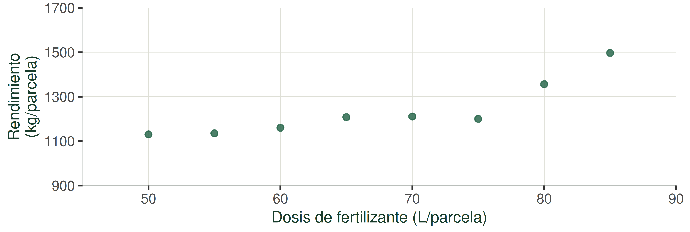
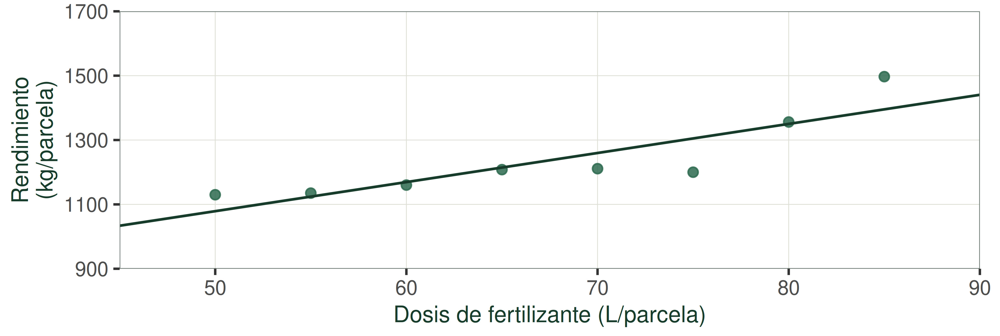
Población y muestra: dos rectas diferentes
Modelo poblacional: \(Y_i=\beta_0+\beta_1X_i+\varepsilon_i\); \(E(Y\mid X)=\beta_0+\beta_1X\).
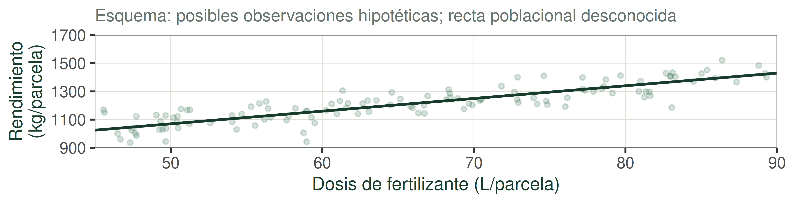
En la población, la relación lineal está caracterizada por \(\beta_0\) (intercepto) y \(\beta_1\) (pendiente).
Recta estimada con la muestra: \(\widehat Y=b_0+b_1X\).
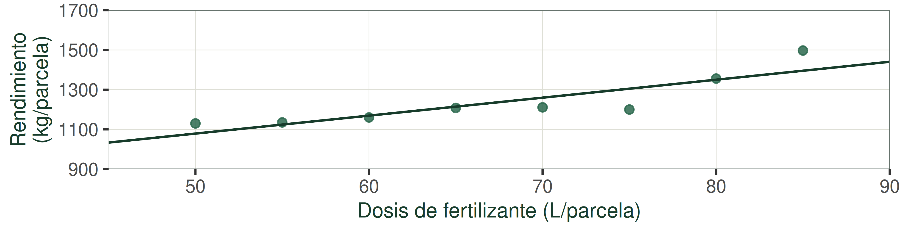
Ocho parcelas observadas: \(b_0=626{,}89\) y \(b_1=9{,}04\), estimaciones de \(\beta_0\) y \(\beta_1\).
Los parámetros pertenecen a la población; los estimamos a partir de la muestra.
Notación: en materiales anteriores puede encontrarse \(\alpha\) para el intercepto y \(\beta\) para la pendiente. Aquí usaremos \(\beta_0\) y \(\beta_1\), una de las notaciones más extendidas en libros y cursos de estadística.
¿Qué representa cada término?
Esquema conceptual del modelo poblacional; en un estudio real no conocemos esta recta.
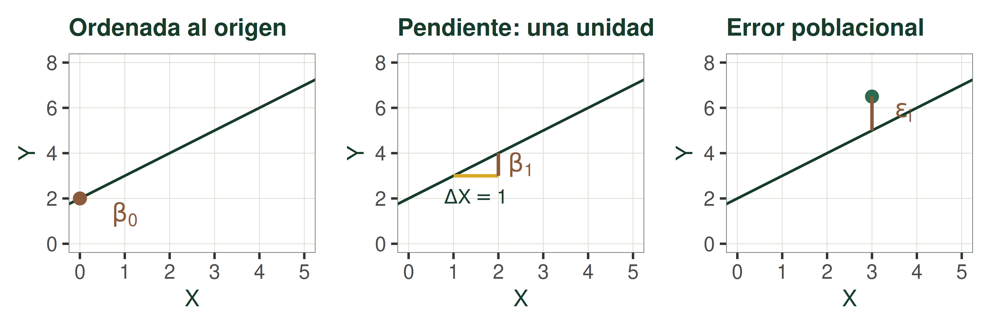
\(\beta_0\): ordenada al origen. \(\Delta X=1\) → \(\Delta E(Y\mid X)=\beta_1\).
\(\varepsilon_i\) es el error respecto de la media poblacional modelada. Reservamos \(e_i\) para el residuo calculado después de estimar la recta con la muestra.
La pendiente
\(\beta_1\) = cambio en la respuesta media esperada por una unidad adicional de \(X\).
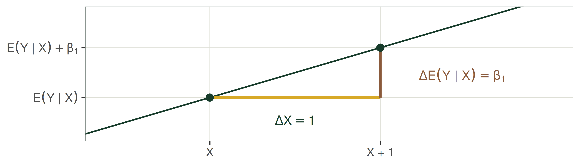
En nuestro ejemplo: kg/parcela por L/parcela.
Describe un cambio medio. La interpretación causal requiere respaldo del diseño.
Volvemos a los mismos tres conjuntos
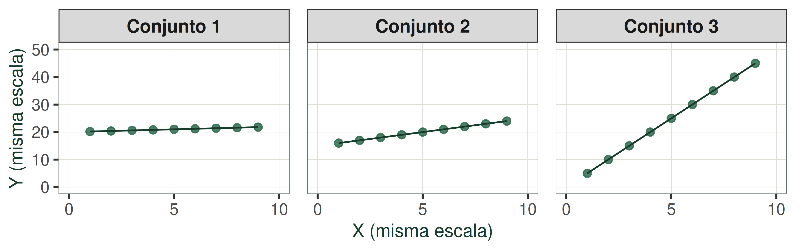
Los tres tenían \(r=1\). Ahora comparamos cuánto cambia \(Y\) por unidad de \(X\).
Pendientes estimadas: \(b_1=0,2\), \(b_1=1,0\), \(b_1=5,0\).
\(r\) describe alineación; \(b_1\), cambio por unidad de \(X\).
La ordenada al origen
\[\beta_0=E(Y\mid X=0)\]
¿Siempre tiene interpretación biológica?
No necesariamente. En las ocho parcelas observamos entre 50 y 85 L/parcela. Cero queda fuera del rango.
El intercepto puede ser necesario para describir la relación sin representar una condición observada o biológicamente pertinente.
La recta poblacional no la conocemos
| Población | Estimación con la muestra |
|---|---|
| Ordenada al origen \(\beta_0\) | \(b_0\) |
| Pendiente \(\beta_1\) | \(b_1\) |
\[\widehat Y_i=b_0+b_1X_i\]
Con las ocho parcelas: \(\widehat Y=626,89+9,04X\).
Por cada 1 L/parcela adicional, el rendimiento medio estimado aumenta 9,04 kg/parcela.
Los estimadores cambian entre muestras. Los números \(b_0\) y \(b_1\) son las estimaciones obtenidas con esta muestra.
Observado, ajustado o predicho y residuo
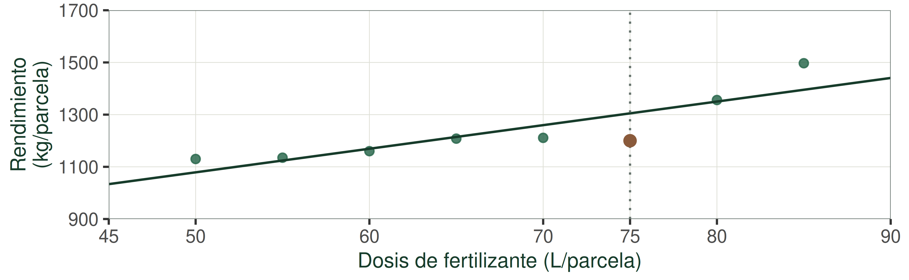
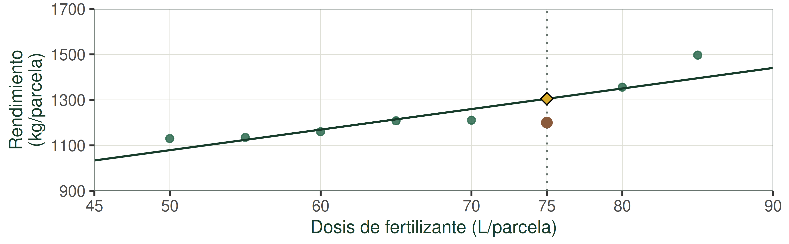
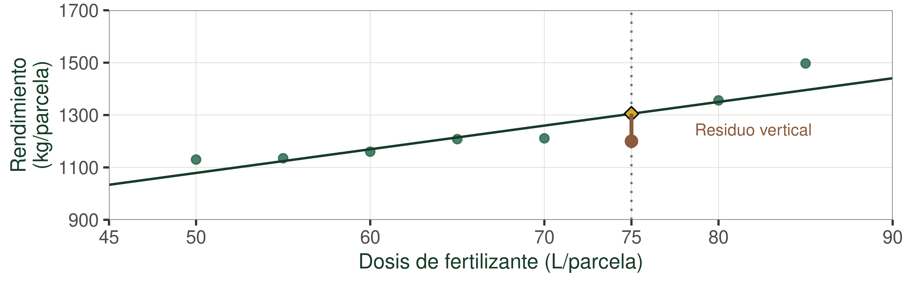
Para \(X=75\) L/parcela: observado \(y_i=1200\) kg/parcela; ajustado \(\widehat Y_i\approx1304{,}9\) kg/parcela.
Residuo: \(e_i=y_i-\widehat Y_i\approx-104{,}9\) kg/parcela.
El residuo es la diferencia entre el valor observado y el valor ajustado o predicho por el modelo. \(\varepsilon_i\): error del modelo poblacional. \(e_i\): residuo obtenido después de estimar la recta con la muestra.
Hay muchas rectas posibles
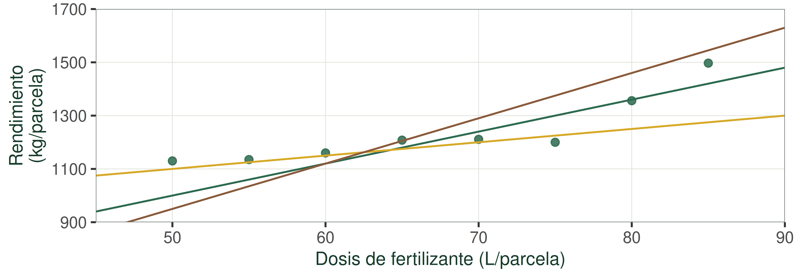
¿Cuál elegimos?
Mínimos cuadrados: buscar una recta
¿Podés encontrar una recta que haga más pequeña \(\sum e_i^2\)?
Σ ei² (kg/parcela)²
Mové los controles y compará la suma de cuadrados.
Elegimos la recta que minimiza \(\sum e_i^2\). Los residuos son distancias verticales; sus cuadrados no se cancelan.
Variabilidad de la respuesta
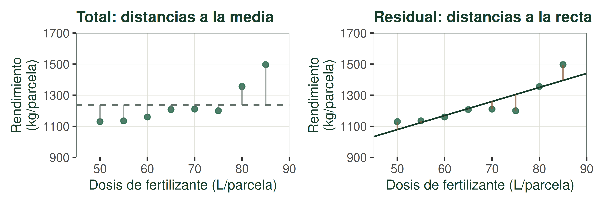
Con intercepto: variabilidad total = parte descrita por la recta + parte residual.
\(\sum(y_i-\bar y)^2=\sum(\widehat Y_i-\bar y)^2+\sum e_i^2\). Es una descomposición estadística, no causal.
Coeficiente de determinación
\[R^2=1-\frac{\sum e_i^2}{\sum(y_i-\bar y)^2}\]
La fracción es la proporción que queda en los residuos.
Esa fracción representa la variabilidad total de \(Y\) que no queda representada por el ajuste lineal.
1 − esa proporción: aproximadamente el 76% de la variabilidad observada en el rendimiento queda representada por la relación lineal con la dosis de fertilizante en estos datos.
En regresión lineal simple con ordenada al origen: \(R^2=r^2\).
Es una descripción estadística del ajuste. Un \(R^2\) alto no demuestra causalidad ni garantiza que el modelo sea apropiado.
Misma recta, distinto grado de ajuste
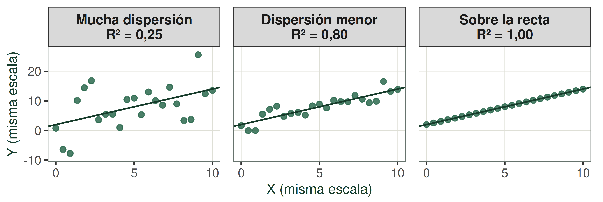
Misma pendiente, misma ordenada al origen y mismo rango de \(X\). Cambia la dispersión vertical.
\(R^2\) cuantifica la proporción de variabilidad de \(Y\) representada por el modelo lineal. Si todos los puntos están sobre la recta, \(R^2=1\). No mide causalidad.
Prueba de la pendiente: pasos 1–4
El mismo procedimiento de siete pasos de la Clase 06.
1. Hipótesis: \(H_0:\beta_1=0\); \(H_1:\beta_1\ne0\).
2. Significación: \(\alpha=0{,}05\), fijada antes del análisis.
3. Estadístico y distribución: \(t=\dfrac{b_1-0}{S_{b_1}}\); bajo \(H_0\), distribución \(t\) con \(\delta=n-2=6\), bajo los supuestos del modelo.
4. Criterio: si valor-p \(<\alpha\), rechazamos \(H_0\); en caso contrario, no la rechazamos.
Paso 5 — Una salida de InfoStat
Análisis de regresión lineal
Variable N R² R² Aj ECMP AIC BIC
RENDIMIENTO 8 0.76 0.72 9663.36 93.58 93.82
Cuadro de Análisis de la Varianza (SC tipo III)
F.V. SC gl CM F p-valor
Modelo 85816.72 1 85816.72 19.35 0.0046
DOSIS FERTILIZ 85816.72 1 85816.72 19.35 0.0046
Error 26612.15 6 4435.36
Total 112428.88 7
Salida del material histórico de Silvia, diapositiva 48: resumen/ANOVA extraídos del texto original; coeficientes del gráfico original. Solo se retiraron las flechas y etiquetas docentes externas. Números originales conservados.
Aprender a leer la salida
¿Cuál es la ecuación estimada? ¿Dónde está la pendiente?
Coeficientes: \(b_0=626{,}89\); \(b_1=9{,}04\). \(\widehat Y=626{,}89+9{,}04X\).
¿Qué significa 9,04 en términos del problema?
Precisión: \(S_{b_1}=2{,}06\), en la columna original «E.E.».
IC95% de \(\beta_1\): [4,01; 14,07] kg/parcela por L/parcela.
Contrastar \(H_0:\beta_1=0\): fila de dosis, \(t=4{,}40\) y valor-p \(=0{,}0046\).
Resumen del ajuste: \(R^2=0{,}76\); ajustado \(=0{,}72\). ¿Qué variabilidad representa?
La cabecera histórica se conserva; usamos \(S_{b_1}\) para el error estándar. \(R^2\) ajustado: corrección que considera la cantidad de predictores; lo retomaremos con modelos más complejos.
¿Qué determina la precisión de la pendiente?
Estimación → error estándar → intervalo de confianza
\(b_1=9,04\); \(S_{b_1}=2,06\) kg/parcela por L/parcela.
\[S_{b_1}=\frac{S_e}{\sqrt{\sum_i(x_i-\bar x)^2}}\]
\(S_e\): desviación estándar residual (aquí, 66,6 kg/parcela).
Menor variabilidad residual → menor \(S_{b_1}\) → mayor precisión.
Mayor dispersión/información de \(X\) → menor \(S_{b_1}\) → mayor precisión, manteniendo lo demás constante.
La fórmula ayuda a interpretar la precisión de \(b_1\) como estimación de \(\beta_1\); no la derivaremos ni calcularemos a mano.
Intervalo de confianza de la pendiente
\[b_1\pm t^*S_{b_1},\qquad\delta=n-2\]
IC95% de \(\beta_1\): [4,01; 14,07] kg/parcela por L/parcela.
En las parcelas de referencia, el intervalo es compatible con un cambio medio positivo de esa magnitud por cada L/parcela adicional.
La confianza pertenece al procedimiento: en repeticiones, aproximadamente el 95% de estos intervalos cubriría la pendiente poblacional.
La inferencia clásica requiere un modelo razonable: linealidad, independencia, varianza constante y errores poblacionales aproximadamente Normales.
Pendiente: pasos 6–7
6. Decisión: \(p=0{,}0046<0{,}05\) → rechazamos \(H_0:\beta_1=0\).
7. Conclusión, de la evidencia a la interpretación
¿Hay relación? Con \(\alpha=0{,}05\), hay evidencia de que \(\beta_1\ne0\).
¿En qué sentido? Positiva: el rendimiento medio aumenta con la dosis.
¿Cuánto? Por cada 1 L/parcela adicional, el rendimiento medio estimado aumenta 9,04 kg/parcela.
¿Con qué incertidumbre? IC95% de \(\beta_1\): [4,01; 14,07] kg/parcela por L/parcela. En repeticiones bajo las condiciones del modelo, aproximadamente 95% de estos intervalos cubriría la pendiente poblacional.
¿Sobre quién? Sobre la relación poblacional representada por parcelas de este cereal bajo las condiciones del ensayo, no solamente sobre las ocho observadas.
Correlación y pendiente: una conexión
Correlación
\(H_0:\rho=0\)
Sin unidades. Simétrica.
Regresión lineal simple
\(H_0:\beta_1=0\)
Con unidades. Depende de cuál variable es \(Y\).
\[b_1=r\frac{S_Y}{S_X}\]
Con los mismos pares y bajo el modelo usual: mismo \(t\), \(\delta=n-2\), mismo valor-p bilateral. Las preguntas siguen siendo diferentes.
Equivalencia de los cálculos para mínimos cuadrados con intercepto y prueba de Pearson. Sus condiciones inferenciales deben justificarse según el diseño.
Una dosis, una respuesta ajustada
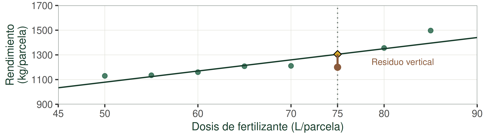
Para \(X=75\) L/parcela: observado \(Y=1200\); \(\widehat Y=b_0+b_1(75)\approx1304{,}9\) kg/parcela.
¿Qué significa exactamente \(\widehat Y=1304{,}9\) kg/parcela?
Es la respuesta media estimada para parcelas con una dosis de 75 L/parcela. Una nueva parcela puede diferir de esa media.
Dos preguntas diferentes
Respuesta media
¿Cuál es el rendimiento medio esperado de las parcelas de referencia con \(X=x_0\)?
Nueva observación
¿Qué rendimiento podría tener una nueva parcela individual con \(X=x_0\)?
Mismo valor central. Distinta incertidumbre.
IC para la respuesta media
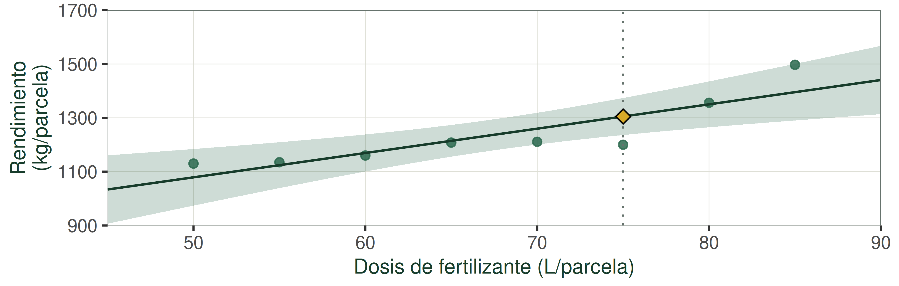
Banda verde: IC95% para \(E(Y\mid X=x_0)\).
A 75 L/parcela: [1236,1; 1373,8] kg/parcela.
Cuantifica la incertidumbre al estimar la media. La banda reúne intervalos puntuales, no una cobertura simultánea de toda la recta.
Intervalo de predicción
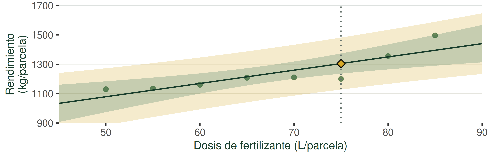
Banda maíz: IP95% para una nueva parcela. Verde: IC95% de la media.
El IP incorpora la incertidumbre sobre la media y la variabilidad individual alrededor de la recta. Por eso es más ancho.
¿IC o intervalo de predicción?
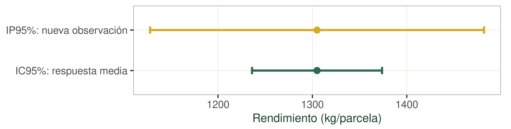
A 75 L/parcela, la respuesta ajustada es 1304,9 kg/parcela.
IC95% de la media: [1236,1; 1373,8]. IP95% individual: [1128,0; 1481,8].
Elegimos el intervalo según si la pregunta se refiere a una media o a una nueva observación.
La incertidumbre cambia con la dosis
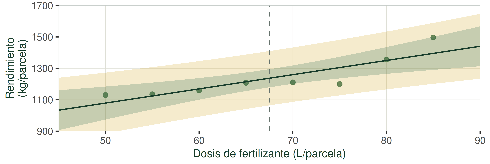
Los intervalos son más estrechos cerca de \(\bar x=67,5\) L/parcela y se ensanchan al alejarnos del centro.
Esto describe la incertidumbre bajo el modelo. No garantiza que una relación lineal continúe fuera del rango observado.
De la clase a una investigación real
Del ejemplo para aprender a una investigación real.
Cobres, Puna Seca: seguimiento entre 2011 y 2022; dos tipos de estepas.
PPNA y precipitación durante más de una década, con años sin cosecha.
Quiroga Mendiola et al. (2025), Ecología Austral 35:395–405. Artículo y PDF.
La pregunta ecológica y su estructura
Pregunta: ¿cómo se relaciona la PPNA de cada estepa con la precipitación del año de cosecha o del año previo?
UE del análisis: observación anual por tipo de estepa. \(X\): precipitación de octubre–marzo (mm), del año actual o anterior. \(Y\): PPNA anual (kg MS/ha/año).
Referencia: dinámica anual de las estepas estudiadas en Cobres, bajo condiciones comparables. Muestra: diez pares anuales por regresión, del seguimiento 2011–2022, con años sin cosecha.
Modelo simple: \(Y_t=\beta_0+\beta_1X_t+\varepsilon_t\) (o \(X_{t-1}\) según la pregunta). Estimamos \(b_0,b_1\); el orden temporal importa.
Quiroga Mendiola et al. (2025), Ecología Austral 35:395–405. Artículo y PDF. No extrapolamos a toda la Puna.
¿Cómo se analizó?
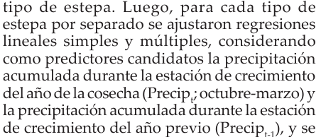
Regresiones simples y múltiples
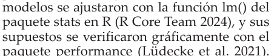
lm() y verificación gráfica
El artículo incluye otros análisis. Aquí nos concentramos en la regresión lineal simple.
Extractos del apartado Análisis de datos, p. 399. Se omiten líneas intermedias; no se alteró su redacción.
Quiroga Mendiola et al. (2025), Ecología Austral 35:395–405. Artículo y PDF.
Antes de mirar números: mirar los datos
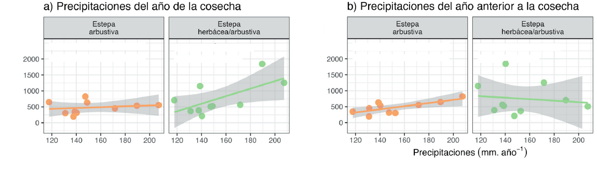
Eje vertical: PPNA (kg MS/ha/año). Ejes horizontales: precipitación (mm) del período indicado.
¿Dónde ven una relación? ¿Positiva o negativa? ¿En qué combinación de estepa y período parece más clara?
Figura 5 original, bloques a y b yuxtapuestos. Ecuaciones, coeficientes de determinación y valores-p ocultos para anticipar la lectura.
Quiroga Mendiola et al. (2025), Ecología Austral 35:395–405. Artículo y PDF.
Los modelos y sus resultados
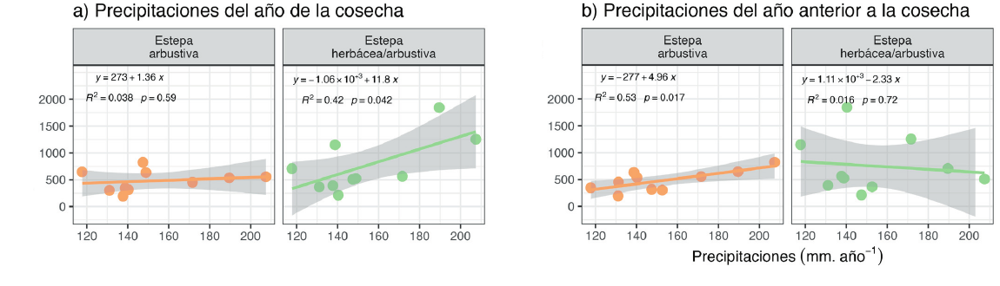
Arbustiva: \(\widehat{\mathrm{PPNA}}_t=-276{,}66+4{,}96\,\mathrm{Prec}_{t-1}\); \(R^2=0{,}53\); valor-p \(=0{,}0171\).
Herbácea/arbustiva: \(\widehat{\mathrm{PPNA}}_t=-1056{,}49+11{,}82\,\mathrm{Prec}_{t}\); \(R^2=0{,}42\); valor-p \(=0{,}0421\).
Coeficientes y valores-p de la Tabla 2, p. 401; la figura usa redondeos más breves. Diez observaciones anuales por regresión. PPNA en kg MS/ha/año; precipitación en mm.
Quiroga Mendiola et al. (2025), Ecología Austral 35:395–405. Artículo y PDF.
¿Qué significa la pendiente 4,96?
En la estepa arbustiva de planicie:
\[\widehat{\mathrm{PPNA}}_t=-276{,}66+4{,}96\,\mathrm{Prec}_{t-1}\]
Por cada mm adicional de lluvia en la estación de crecimiento del año anterior, la PPNA media estimada fue 4,96 kg MS/ha/año mayor.
IC95%: [1,1; 8,8] kg MS/ha/año por mm; valor-p \(=0{,}0171\).
Asociación observada en la estepa estudiada. El seguimiento observacional no prueba un efecto causal por sí solo.
Quiroga Mendiola et al. (2025), Ecología Austral 35:395–405. Artículo y PDF.
¿Cómo se reporta una regresión?
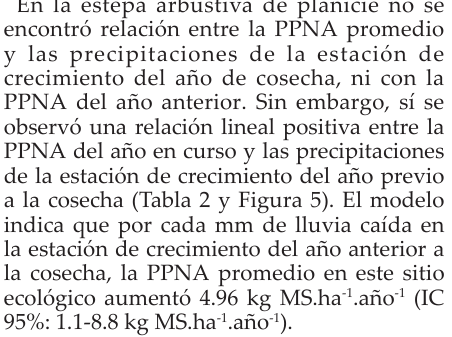
Dirección: positiva.
Magnitud y unidades: 4,96 kg MS/ha/año por mm.
Incertidumbre: IC95% [1,1; 8,8].
Evidencia: valor-p 0,0171.
Contexto: estepa arbustiva, lluvia del año previo.
El resultado científico no es solamente “p < 0,05”.
Quiroga Mendiola et al. (2025), Ecología Austral 35:395–405. Artículo y PDF.
Ajustar una recta es fácil. ¿Cuándo confiar en ella?
Con variación en \(X\), podemos calcular una recta. Para interpretarla y hacer inferencia necesitamos que represente razonablemente cómo se comportan los datos.
1. Linealidad: la respuesta media cambia aproximadamente en línea recta.
2. Variabilidad alrededor de la recta: dispersión y distribución condicional.
3. Independencia: cómo se diseñó el estudio y se obtuvieron las observaciones.
Linealidad
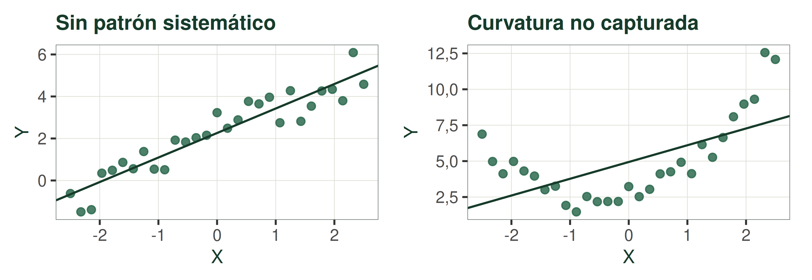
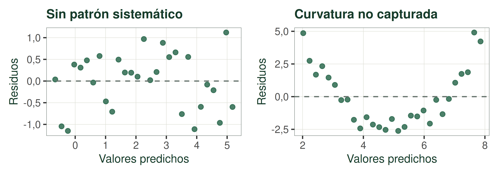
Primero: nube y recta. Después: residuos frente a valores predichos.
Si queda una curva sistemática en los residuos, la recta no capturó toda la estructura.
Variabilidad alrededor de la recta
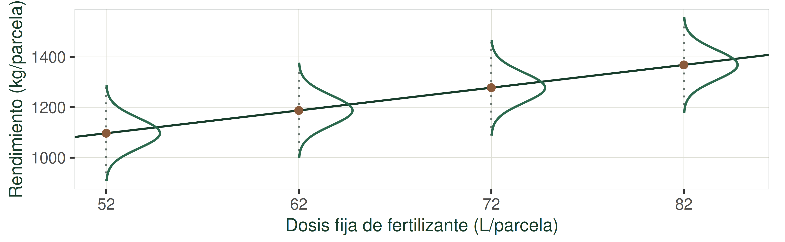
Para un mismo \(X\), distintos valores de \(Y\) varían alrededor de \(E(Y\mid X)\).
Para la inferencia clásica: variabilidad aproximadamente constante y errores aproximadamente Normales, centrados en cero; equivalentemente, \(Y\mid X\) aproximadamente Normal alrededor de su media.
Esquema conceptual, no distribuciones estimadas con ocho parcelas. No se exige normalidad marginal de \(X\) ni de \(Y\). Retomaremos estos supuestos y sus diagnósticos en ANOVA.
¿La dispersión se mantiene?
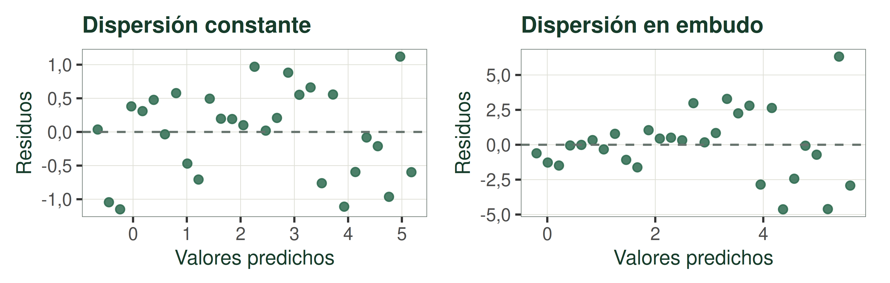
Residuos \(e_i\) frente a valores ajustados \(\widehat Y_i\): buscamos una dispersión aproximadamente constante.
Un embudo alerta sobre cambios en la variabilidad; los errores estándar e intervalos usuales pueden ser inadecuados.
Independencia: primero el diseño
Las observaciones deben aportar información independiente.
Medidas repetidas sobre la misma planta.
Parcelas vecinas que comparten condiciones.
Observaciones sucesivas en el tiempo.
La independencia se justifica principalmente con el diseño y el muestreo; no con residuos frente a ajustados.
Cuando corresponde, patrones de residuos en el tiempo, el orden o el espacio pueden alertar sobre dependencia. En el artículo, las observaciones son años.
Observaciones inusuales e influyentes
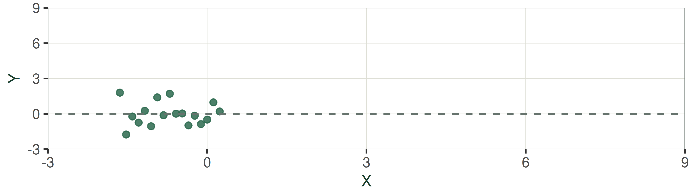
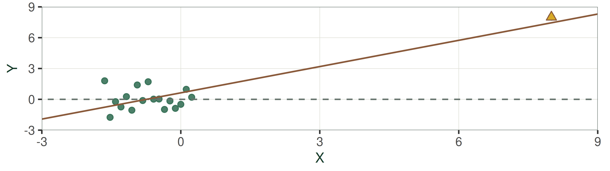
Un solo dato puede cambiar mucho la recta. Trazo discontinuo: sin el punto; continuo: con él.
¿Es un error de registro? ¿Es real pero inusual? ¿Cuánto cambia la pendiente?
Nunca eliminar una observación solamente porque molesta al modelo.
Predecir dentro del rango observado
Para 75 L/parcela, usamos información del rango observado: 50–85 L/parcela.
La predicción tiene respaldo en esas condiciones, sujeta a un modelo razonable y a una nueva unidad comparable.
¿Y fuera del rango?
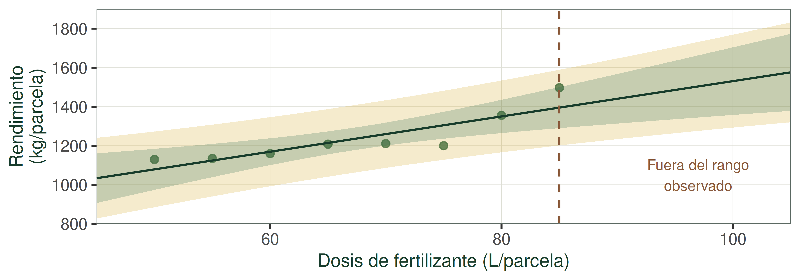
Podemos calcular una respuesta a 100 L/parcela. Empíricamente, no sabemos si la relación continúa de la misma manera.
La ecuación puede calcularse. La evidencia no se extiende automáticamente fuera del rango observado. Los intervalos suponen que el modelo continúa siendo apropiado.
¿Qué quiero saber sobre dos variables cuantitativas?
¿Quiero describir su asociación lineal?
CORRELACIÓN
\(r\longrightarrow\rho\)
¿Quiero modelar cómo cambia \(Y\) con \(X\) y estimar o predecir \(Y\)?
REGRESIÓN
\((b_0,b_1)\longrightarrow(\beta_0,\beta_1)\)
La técnica la define la pregunta.

Andrés Tálamo - Estadística y Diseño Experimental - UNSa